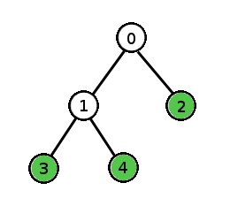
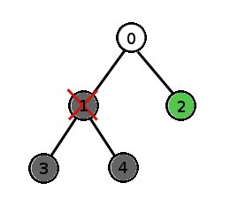

Single Round Match 435 Round 1 - Division I, Level One
In biology, organisms have the following property: Starting from the first cell (the zygote), each cell during an organism's development process either divides into 2 other cells or does not divide at all. An organism is mature when all of its cells will not divide any further.
Let's assign a unique number to each cell in an organism's development process. For example, consider a species in which each organism starts with cell 0, which divides into cells 1 and 2. Cell 1 divides into cells 3 and 4. Cells 2, 3 and 4 do not divide. Every mature organism of this species will consist of exactly 3 cells - 2, 3 and 4.

During the development process, if we kill a cell, it will be absent in the mature form of the organism. If that cell happens to be a cell that divides, then the mature organism will be missing all of the cell's descendants as well because the cell is killed before it has a chance to divide. For example, in the organism described above, if we kill cell 1 during the development process, the mature organism will contain only cell 2.

You are given a int[] parentCell describing the development process of an organism. The i-th element of parentCell is the parent cell of cell i (where i is a 0-based index). The zygote's parent is -1. Return the number of cells the mature form of this organism would have if you killed cell deletedCell during the development process.
CellRemovalcellsLeftint[], intintint cellsLeft(int[] parent, int deletedCell)
2
This is the example organism from the problem statement. If we kill cell 2, there will still be two cells left (3 and 4).
1
This is the example organism from the problem statement. If we kill cell 1, the only cell left will be cell 2. Cells 3 and 4 will not exist because cell 1 is their ancestor.
0
If we kill the zygote, there is nothing left.
4
35,18,7,36,10,16,5,38,35,4,13,-1,16,26,1,12,2,5,18,40,1,17,38,44,14],
24